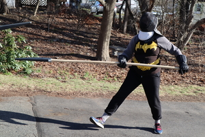

About Our Group
Our Goals
The goals of Scherma Nova Studiorum are based in the ideas of collaborative learning, and mutual aid and support. These can encompass a wide range of learning approaches and projects, including:

- Working on drills
- Studying manuals (or translating one!)
- Applications from other martial arts
- Pedagogy - learning about learning/teaching
- Learning through observation and discussion (such as analyzing fight videos online, or observing fights in person - with prior consent of all involved)
- Taking a class, or asking someone else to teach you a thing
- Use of group learning materials
Historical Inspiration
Scherma Nova Studiorum is modeled on the student guilds in 11th century Bologna, which eventually led to the formation of the first university. The guilds were formed for mutual aid and protection, by foreign students who had traveled to Bologna to study Roman law. They also functioned as a sort of union, in that they were able to engage in collective bargaining with the city to secure better treatment, and with groups of scholars that they hired to instruct them in various subjects.
For the purposes of our group, we extrapolate from that idea, that a group of students may have also hired instructors to teach them fencing and self defense. Some of the Bolognese school of fencing masters were in fact also instructors at the university.
The ideas from the Bologna model that we find most relatable are the secular focus (most education around this time in Europe was religious in nature) and the way it centers the students, rather than the instructors, as our group aims to be knowledge-seeking, rather than knowledge-imparting.
If you're interested in learning more about the student guilds of Bologna, check out "The University of Bologna, the city, and the papacy", by Paul F. Grendler, available on JSTOR